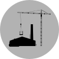

This is the default dialog which is useful for displaying information. The dialog window can be moved, resized and closed with the 'x' icon.
|
Ministerstvo práce a sociálních věcí
|
Všeobecná pokladní správa |
Ministerstvo školství, mládeže a tělovýchovy |
Státní fond dopravní infrastruktury a Ministerstvo dopravy |
Ministerstvo vnitra |
Ministerstvo zemědělství |
Ministerstvo obrany |
Státní dluh |
Státní zemědělský intervenční fond |
Ministerstvo pro místní rozvoj |
Ministerstvo spravedlnosti |
 Ministerstvo průmyslu a obchodu |
Ministerstvo financí
Ministerstvo životního prostředí
Ministerstvo zdravotnictví
Ministerstvo kultury
Ministerstvo zahraničních věcí
Akademie věd České republiky
Státní fond životního prostředí ČR
Český úřad zeměměřický a katastrální
Správa státních hmotných rezerv
Státní fond rozvoje bydlení
Grantová agentura České republiky
Český statistický úřad
Bezpečnostní informační služba
Poslanecká sněmovna Parlamentu
Úřad vlády České republiky
Český telekomunikační úřad
Nejvyšší kontrolní úřad
Senát Parlamentu
Kancelář prezidenta republiky
Státní úřad pro jadernou bezpečnost
Státní fond ČR pro podporu a rozvoj české kinematografie
Operace státních finančních aktiv
Národní bezpečnostní úřad
Úřad průmyslového vlastnictví
Český báňský úřad
Ústav pro studium totalitních režimů
Ústavní soud
Úřad pro ochranu hospodářské soutěže
Energetický regulační úřad
Úřad pro ochranu osobních údajů
Kancelář Veřejného ochránce práv
Rada pro rozhlasové a televizní vysílání
Státní fond kultury ČR
Technologická agentura České republiky